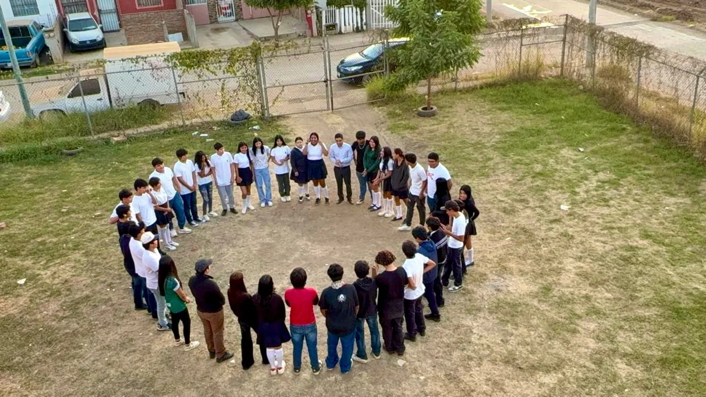
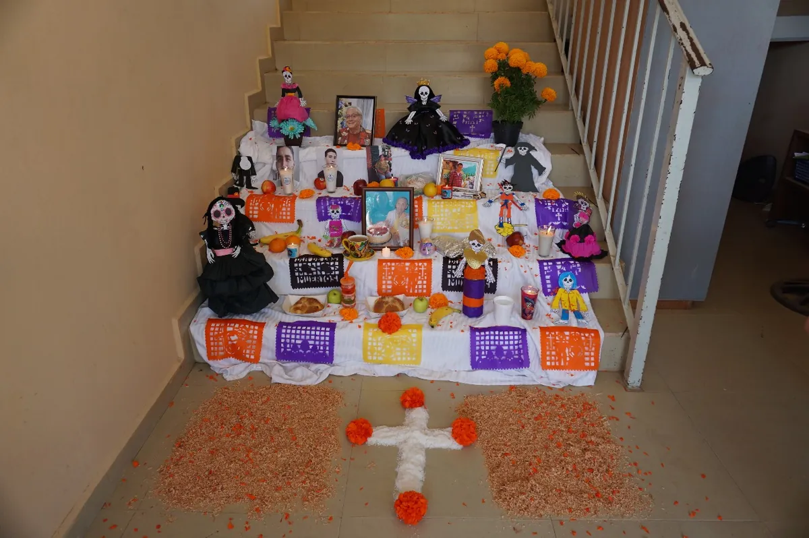
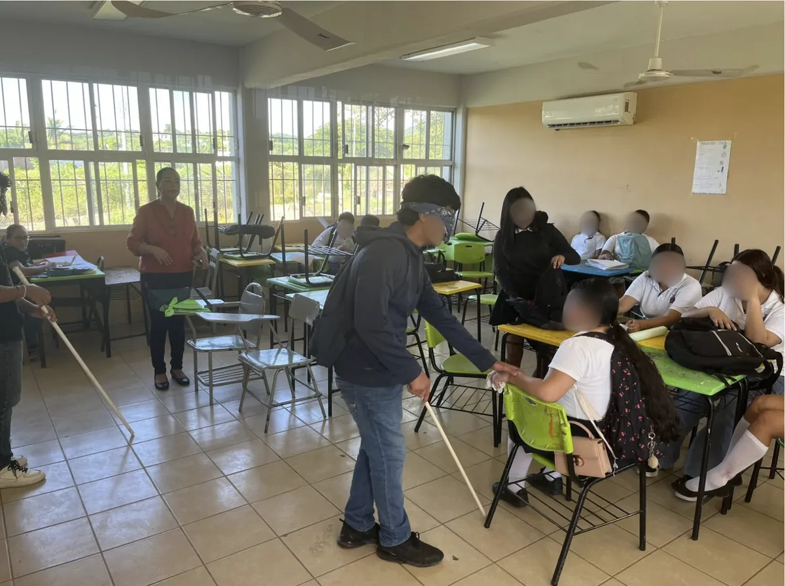
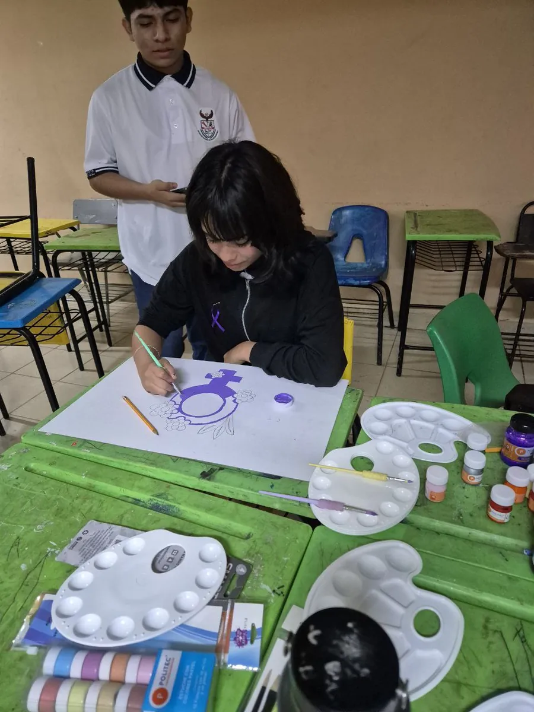

Ven y forma parte del CEB 9/22
La preparatoria federal más joven de Mazatlán. Gratuita, cercana y con lugar para ti.
- Colegiatura: $0
- Beca Benito Juárez para todo el alumnado
- Vespertino: L–V, 14:00 a 20:00 h
Encuentra lo que buscas
Aspirantes
Todo lo que necesitas para inscribirte al ciclo 2026-2027.
Estudiantes y familias
Lo que usas cada semana, en un solo lugar.
- El horario de tu grupo
- Calendario de actividades
- Pase de asistencia para madres y padres
- ¿Hay clases hoy?
Bienvenidos al CEB 9/22
A cada estudiante lo recibimos con una certeza: que trae consigo algo valioso — una inteligencia por descubrir, una forma propia de ver el mundo, un futuro que nadie puede vivir en su lugar — y que nuestra tarea es darle el tiempo, el lugar y la confianza para que todo eso crezca.
A cada familia la recibimos con un compromiso: que sus hijos vengan con gusto a la escuela y lleguen contentos a casa; que se sientan escuchados y cuidados; que sepan que aquí estamos al pendiente de ellos, y que esta escuela es un lugar de confianza donde siempre se vela por el interés de cada estudiante.
Y a Mazatlán lo servimos con una convicción: que una escuela pública y gratuita puede ser motivo de orgullo, y que cada generación formada aquí le devolverá a esta ciudad más de lo que recibió.
Ese es nuestro propósito. Las puertas están abiertas de lunes a viernes, de 14:00 a 20:00 h.
Las primeras veces
Somos una escuela nueva: todo lo que ves aquí sucedió por primera vez en nuestra historia.




Avisos recientes
Cada aviso lleva su fecha de publicación. Solo es oficial lo publicado en este sitio y en los canales del plantel.
Hay un lugar con tu nombre
Las inscripciones al ciclo 2026-2027 están abiertas desde el 17 de agosto. Ven al plantel de lunes a viernes, de 14:00 a 20:00 h, y asegura tu lugar el mismo día.
Quiero inscribirme